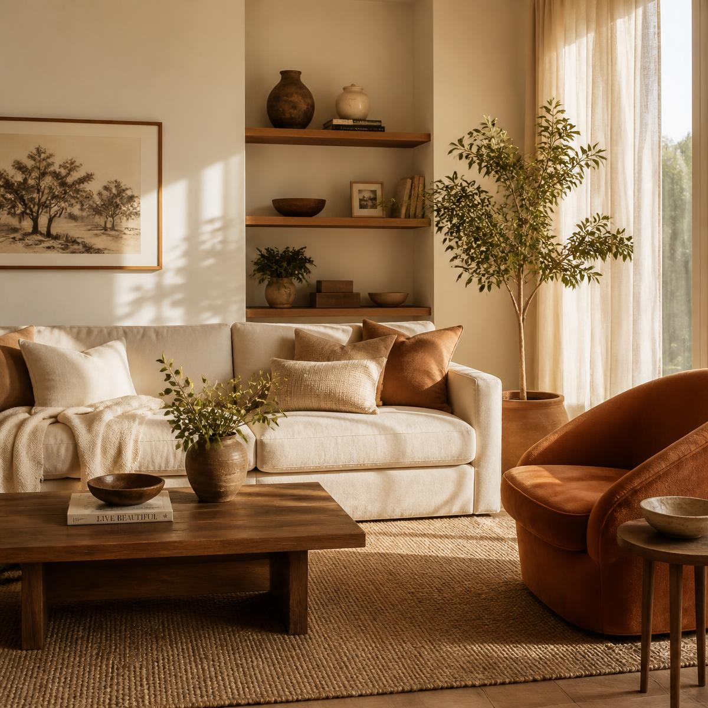
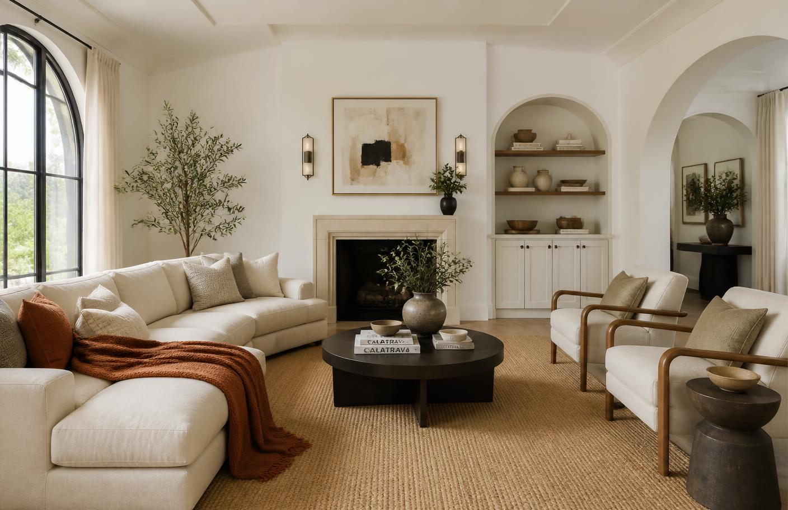
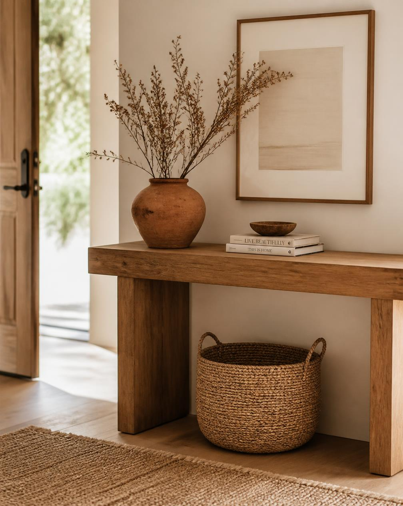

Occupied staging
A thoughtful edit and strategic styling plan that works with the life already happening in your home.
Home staging + redesign
Thoughtful styling that helps a home feel more inviting, photograph beautifully, and move confidently toward its next chapter.

A clearer point of view
Before and After brings a calm, practiced eye to the spaces that matter. We create a sense of ease for the people walking through, and a sense of confidence for the people making the next move.
Ways we help
Flexible support for the home you are selling, living in, or preparing to share.
A thoughtful edit and strategic styling plan that works with the life already happening in your home.
Furniture, art, and layers that give an empty property warmth, scale, and a clear point of view.
A focused reset for rooms that need more intention, from a single corner to a whole-home refresh.
Clear, actionable guidance when you want to make smart decisions before you invest time or money.

Before / After
We edit, layer, and arrange with intention so the best parts of a space can be seen at a glance.
Our process
Good design starts with listening. From the first conversation to the final detail, the process stays practical, collaborative, and focused on what matters.
Share a few details about your home, goals, and timing.
We talk through the best-fit service and what your property needs.
Styling, editing, and thoughtful layers bring the plan to life.
The finishing touch
From the entryway to the final room, we bring a calm point of view to the choices that make a home feel cared for.
Care
In every edit
Clarity
In every room

Words to carry with you
Sample testimonial-style copy. Shared perspectives are illustrative, not verified client claims.
Sample testimonial
"The room finally felt like itself, only clearer. Every choice had a reason."
Sample testimonial
"A thoughtful second set of eyes made the property easier to present with confidence."
Good to know
A few answers to help you decide whether this is the right next step.
Homeowners preparing to sell, real estate professionals presenting a listing, and anyone who wants their current space to feel more considered.
Make an inquiry
Tell us a little about the property and what you are hoping to change. Serving homeowners and real estate professionals in your area.
Consultation details and service availability are confirmed after inquiry.